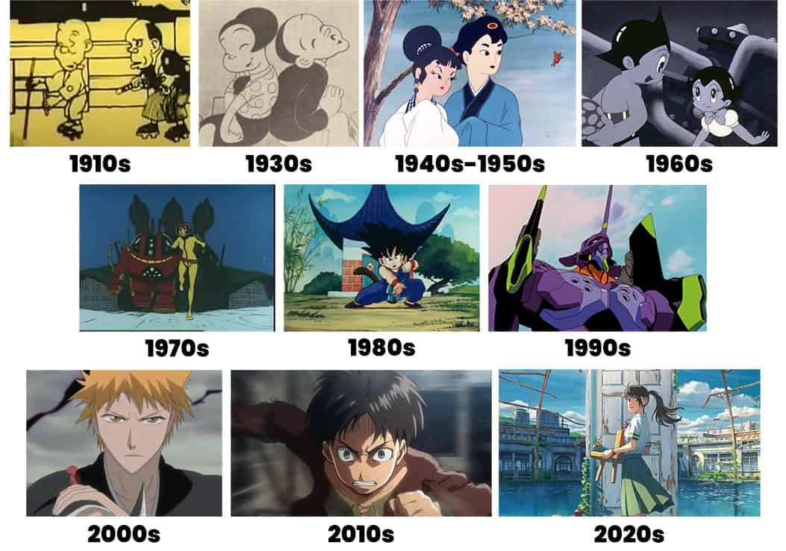

Anime began with short films in the early 20th century, with the
first widely accepted "real" anime being The Dull Sword (1917) by
Junichi Kochi. The industry grew through the use of cel animation
and the founding of studios like the Kitayama Movie Factory in the
1920s. Osamu Tezuka's work in the 1960s helped establish a
distinctive anime style, leading to its spread and evolution into
the global phenomenon it is today, with major studio Toei Animation
and later Studio Ghibli shaping its modern form.
Learn More
Brief History of Anime
My Favorite Anime
Overtime I have watched alot of different animes! Some were great,
fun, engaging, while others weren't so much. At first, when I was in
highschool I wasn't that big of a fan of anime. Although, as a kid I
had been unknowingly watching anime. Some of the animes I watched as a
kid were Pokemon, Yu-Gi-Oh, and Astro Boy. It wasnt until early
college days that I started giving anime a chance.
 As mentioned before, I have watched plenty of anime overtime, but
there is one anime that holds a special place in my heart. And that
anime is Naruto! It was one of the first animes that I watched and I
was completely invested. Naruto has so many memorable moments and
characters. The moment I started watching I wanted to know what the
next episode had instore. Aside from the countless filler episodes,
Naruto is full of humor and action. Despite it's moments of silliness
there are plenty of heart breaking and jaw dropping scenes. Naruto
captures emotion and entertainment all in one package. These are some
of the reasons why naruto is my favorite anime of all time!
As mentioned before, I have watched plenty of anime overtime, but
there is one anime that holds a special place in my heart. And that
anime is Naruto! It was one of the first animes that I watched and I
was completely invested. Naruto has so many memorable moments and
characters. The moment I started watching I wanted to know what the
next episode had instore. Aside from the countless filler episodes,
Naruto is full of humor and action. Despite it's moments of silliness
there are plenty of heart breaking and jaw dropping scenes. Naruto
captures emotion and entertainment all in one package. These are some
of the reasons why naruto is my favorite anime of all time!
Who Is My Favorite Character?
Who is it?
Described as a laid-back, intelligent, and powerful Jonin who is a
tactical genius known for his relaxed demeanor and sarcastic wit,
but who becomes a stern and calm leader in crucial moments.
 Kakashi Hatake
Kakashi Hatake
My Watched Animes
Here is a table containing some of the animes I watched and the year they came out
| Anime Name | Year Released |
|---|---|
| Naruto | 2002 |
| Chainsaw Man | 2022 |
| Dragon Ball | 1986 |
| Afro Samurai | 2007 |
| Dragon Ball Z | 1989 |
| Vinland Saga | 2019 |
| Plunderer | 2020 |
| ZOM 100 | 2023 |
| Mob Psycho 100 | 2016 |
| MEGALOBOX | 2018 |
| JUJUTSU KAISEN | 2020 |
| Attack on Titan | 2014 |
| Yu-Gi-Oh | 2000 |
| Dragon Ball Super | 2015 |
| Hell's Paradise | 2023 |
| Assassination Classroom | 2015 |
| Shangri-La Frontier | 2023 |
| Solo Leveling | 2024 |
| Demon Slayer | 2019 |
| My Hero ACADEMIA | 2016 |
| MASHLE:MAGIC AND MUSCLES | 2023 |
| Kaiju No.8 | 2024 |
| Black Clover | 2017 |
| DAN DA DAN | 2024 |
Most of these animes can be watched on Crunchyroll !